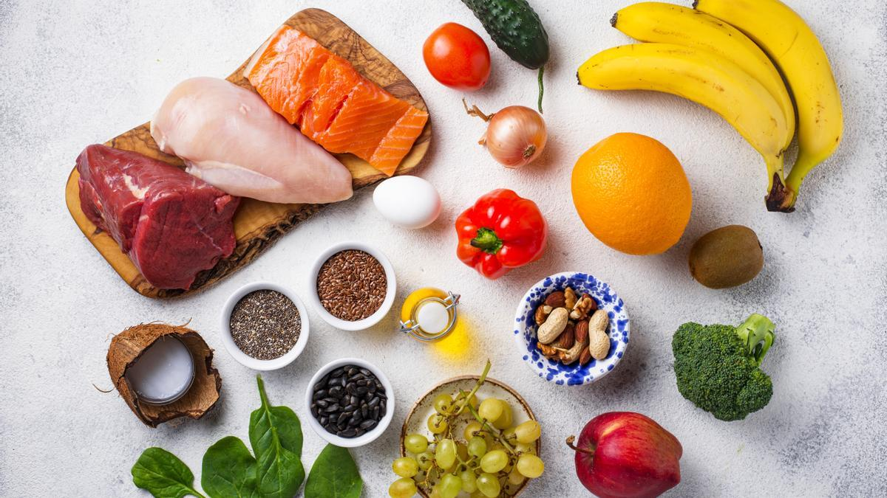
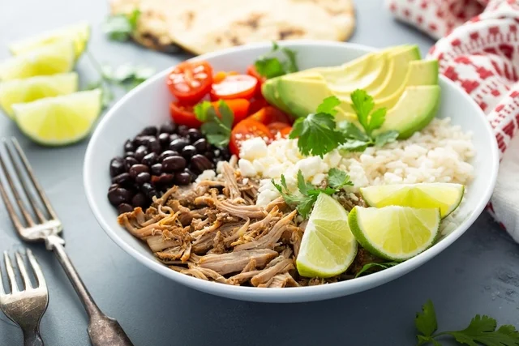

Las dietas por objetivos son planes alimentarios específicos diseñados para ayudar a las personas a lograr un objetivo de salud o a mejorar su rendimiento físico. Algunos ejemplos comunes de objetivos de salud incluyen la pérdida de peso, la ganancia muscular, la definición muscular o la mejora del rendimiento deportivo.
Dieta para pérdida de peso
Este tipo de dieta se enfoca en reducir el consumo de calorías y en aumentar la actividad física para crear un déficit calórico que promueva la pérdida de peso. Algunas de las recomendaciones comunes incluyen comer alimentos ricos en fibra y proteínas, limitar el consumo de alimentos procesados y azúcares añadidos, y controlar el tamaño de las porciones.

Dieta para ganancia muscular
Este tipo de dieta se enfoca en aumentar la ingesta de calorías y proteínas para promover el crecimiento muscular. Los alimentos recomendados incluyen carnes, pescados, huevos, legumbres, lácteos y frutos secos, y se suelen recomendar múltiples comidas al día para asegurar un aporte constante de nutrientes.

Dieta para mejorar el rendimiento deportivo
Este tipo de dieta se enfoca en maximizar el rendimiento durante el ejercicio y en acelerar la recuperación después del mismo. Las recomendaciones nutricionales varían según el deporte o actividad física, pero por lo general se enfocan en aumentar la ingesta de carbohidratos complejos, proteínas magras y grasas saludables, y en mantenerse hidratado durante todo el entrenamiento.